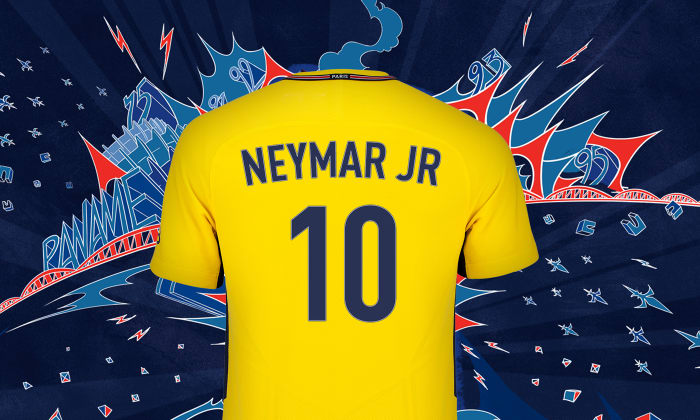
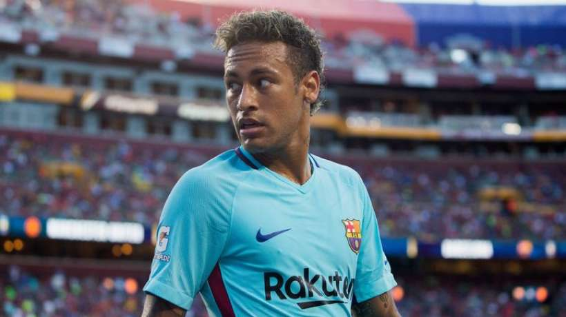

Neymar Jr est à Paris !

- 
- 
La nouvelle recrue du Paris Saint-Germain est arrivé en la capitale française ce vendredi matin. Le début d'une journée qui restera dans l'histoire du football mondial.Le Paris Saint-Germain est très heureux d’annoncer l’arrivée dans son effectif de Neymar Jr. L’attaquant international brésilien a signé, ce jeudi, un contrat de 5 ans en présence des représentants du club et du joueur. Neymar Jr est désormais lié au club de la capitale jusqu’au 30 juin 2022.
'Alexis restera... c'est aussi simple que ça'
Arsène Wenger a répété jeudi qu'Alexis Sanchez honorerait bien sa dernière année de contrat avec Arsenal, qu'il le veuille ou non. Sanchez a notamment été annoncé dans le viseur du PSG et de Manchester City, deux clubs qui, au contraire d'Arsneal, joueront la Ligue des champions la saison prochaine. Tout ce que je peux vous dire, c'est qu'il est concentré et que ma décision est claire, a répété Wenger en conférence de presse ce jeudi. Il restera et respectera cette décision. C'est aussi simple que ça.
Kylian Mbappé veut quitter Monaco
Le jeune attaquant français, âgé de 18 ans, aurait décidé de quitter le club champion de France dès cet été. Le Barça, le Real et City sont sur les rangs. L'un des joueurs les plus chers de l'histoire ? En juin dernier, une opération de 130 millions d'euros avait été évoquée. La transaction pourrait en réalité être de 180 millions d'euros. Une somme qui ferait de Kylian Mbappé le joueur le plus cher de l'histoire après le Brésilien Neymar, sur le point d'être transféré au PSG pour 222 millions d'euros.
Possible retour d'Ibrahimovic au AC Milan
Laissé libre en juin dernier, Zlatan Ibrahimovic a dû stopper son aventure à Manchester United en raison de sa blessure au genou. Mais aujourd'hui, le Times assure que les Red Devils négocient avec Mino Raiola afin de le rapatrier à Old Trafford.